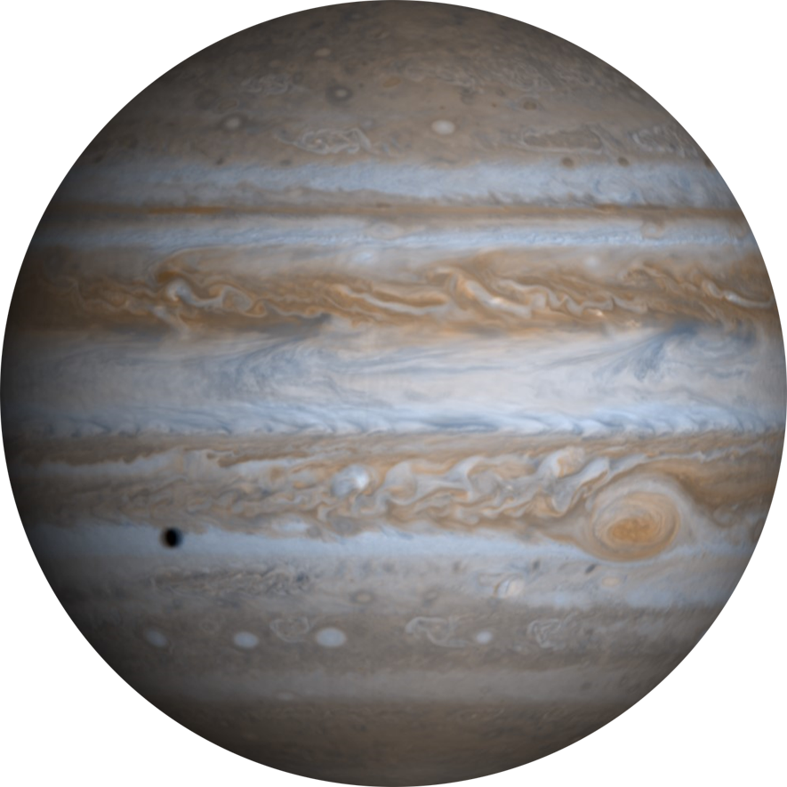

Júpiter é um planeta gasoso com nuvens coloridas e é propenso a tempestades duradouras e
perigosas.
A estrutura interna de Júpiter ainda não é completamente conhecida, mas estudos sugerem a
presença de um núcleo sólido ou gelado envolto por um manto de hidrogênio metálico denso.
A superfície de Júpiter é uma mistura de hidrogênio líquido e gasoso, estendendo-se até
cerca de 1000 quilômetros de profundidade.
A fronteira entre o núcleo e o manto de Júpiter pode atingir temperaturas de até 35 mil ºC.
Júpiter é conhecido por suas tempestades e nuvens coloridas, tornando-o um planeta
impressionante.
